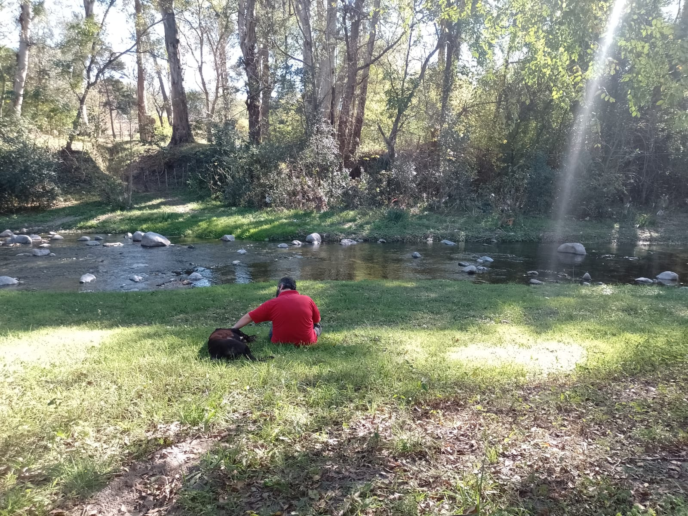

Desde muy chico aprendí la importancia de escuchar, ayudar y generar vínculos genuinos con las personas. Crecí en una ciudad turística, donde orientar visitantes y colaborar con quienes necesitaban ayuda formó parte de mi día a día. Esa experiencia temprana despertó una vocación de servicio que continúa acompañándome hasta hoy.
Sobre mí
Más allá del código
Personas, naturaleza y tecnología como partes de una misma forma de observar, comprender y construir soluciones.

Mi historia
Una mirada humana para resolver problemas reales.
Con el tiempo desarrollé experiencia en atención al cliente, Customer Success, Customer Experience, ventas y procesos comerciales, fortaleciendo habilidades como la escucha activa, la comunicación efectiva y la capacidad para comprender necesidades reales y transformarlas en soluciones concretas.
Mi recorrido profesional me permitió trabajar con personas de distintos perfiles, construir relaciones de confianza y entender que detrás de cada proceso, producto o sistema siempre existe una necesidad humana que merece ser comprendida.
Además de la tecnología, la música ocupa un lugar fundamental en mi vida desde la infancia. También disfruto del deporte, la naturaleza, las actividades al aire libre y los espacios que invitan a reflexionar y observar las cosas desde nuevas perspectivas.
Hoy combino esa experiencia humana y comercial con mi formación en desarrollo de software, buscando crear herramientas útiles, accesibles y orientadas a mejorar la vida de quienes las utilizan.
Lo que me inspira
Cuatro dimensiones que forman parte de mí.
Música
La creatividad y la sensibilidad artística forman parte de mi manera de pensar.
Personas
Disfruto escuchar, acompañar y construir relaciones de confianza.
Tecnología
Transformar problemas reales en soluciones digitales útiles.
Naturaleza
Un espacio para reflexionar, aprender y encontrar nuevas ideas.
Personas primero. Tecnología con propósito.
Conversemos